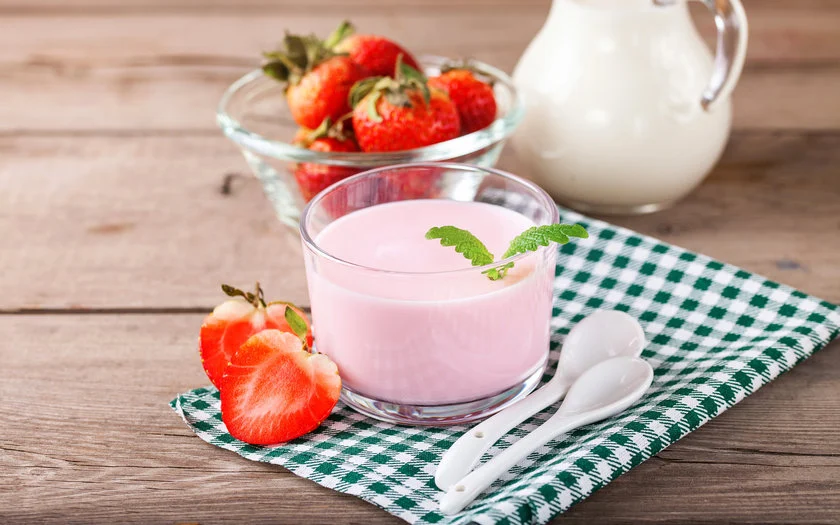
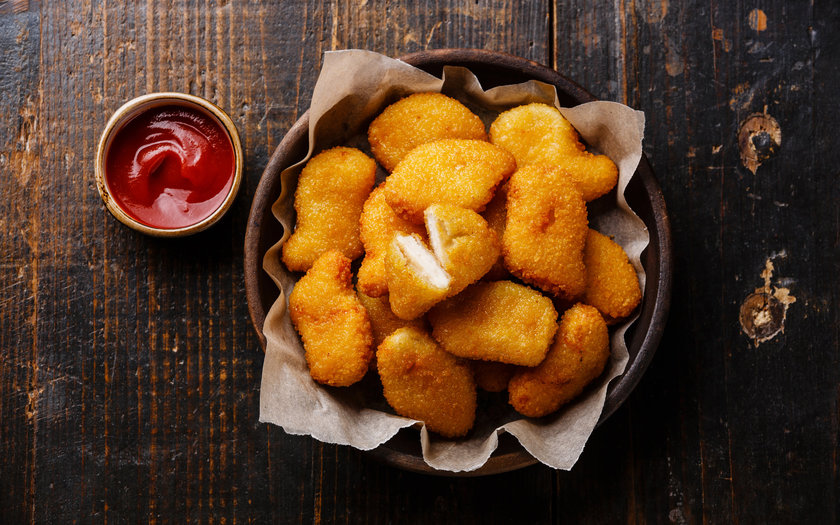
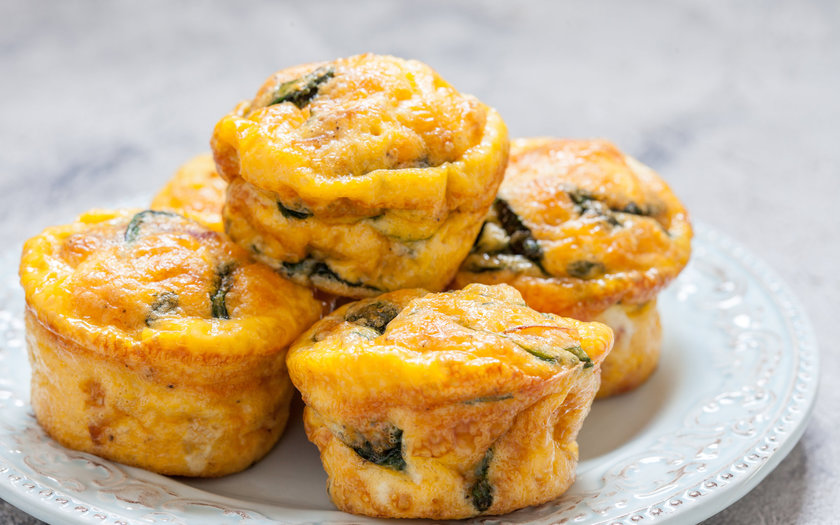
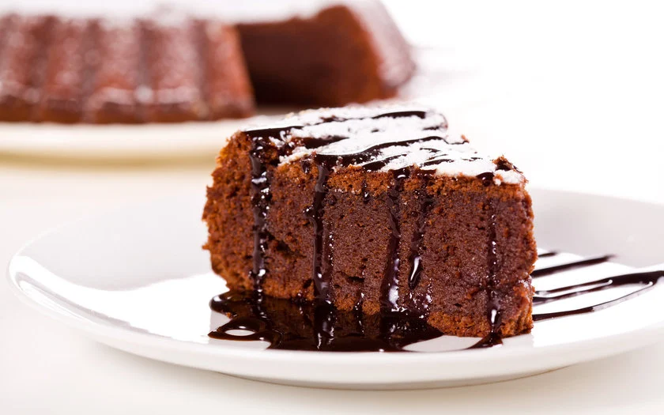

ALIMENTAÇÃO SAUDÁVEL
INICIO/ CONTATOS/
RECEITAS SAUDÁVEIS E GOSTOSAS

Pão de Queijo Light de Liquidificador
Ingredientes
1 ½ xícara de polvilho doce
½ xícara de leite desnatado
½ xícara de ricota amassada
1 xícara de café de queijo prato light ralado
1 gema
2 claras
2 colheres de sopa de óleo vegetal
Sal a gosto
Modo de preparo
Ferva o leite e adicione no liquidificador ainda quente com os outros ingredientes. Bata tudo por 1 minuto em
velocidade máxima. Unte as formas individuais com margarina light e leve ao forno médio pré-aquecido por 15
minutos ou até dourar. Sirva ainda quente.

Danoninho Caseiro
*Receita Natue
Ingredientes
10 morangos
1 pacote de gelatina incolor
1 colher (sopa) de biomassa de banana verde
1 pote de iogurte natural
1 colher (sopa) de mel
Modo de preparo
Higienize os morangos e bata-os no liquidificador com o iogurte, a biomassa de banana verde e o mel. Reserve. Hidrate
a gelatina conforme instruções da embalagem e bata no liquidificador junto com os demais ingredientes. Distribua em
pequenas formas e leve para geladeira por, no mínimo, 3 horas.

Nuggets caseiro assado
ingredientes
1kg de peito de frango
2 colheres de chá de sal
Pimenta
2 colheres de sopa de páprica
1 colher de sopa de alho em pó
4 colheres de sopa de farinha de trigo
½ xícara de queijo parmesão
½ xícara de manteiga derretida
200g de flocos de milho sem açúcar
Modo de preparo
Cortar o peito em cubos grandes. Misturar o sal, pimenta, alho em pó, páprica e farinha de trigo. Envolver bem todos
os pedaços de frango nessa mistura. Banhar um por um na manteiga derretida e depois cobrir com os flocos de milho bem
quebrados. Levar a uma travessa e congelar por no mínimo 2h e transferir para sacos plásticos. Congelar por até 6
meses. Para preparar é só levar a uma travessa e assar em forno preaquecido a 200 graus de 30 minutos, até dourar.

Muffin de Omelete
ingredientes
1 folha de couve, com o talo, bem picada
½ xícara (chá) de brócolis bem picado
1 tomate médio, sem sementes, picado
½ xícara (chá) de milho-verde cozido
5 ovo
1 colher (chá) de sal
½ colher (chá) de orégano fresco
4 colheres (sopa) de leite integral
½ colher (chá) de fermento em pó
modo de preparo
Em um recipiente, misture a couve, o brócolis, o tomate e o milho e distribua em 6 forminhas para empada ou
muffin, untadas com azeite (7 cm de diâmetro x 8 cm de altura). Reserve. No mesmo recipiente, misture, batendo os
ovos, o sal, o orégano, o leite e o fermento em pó, e distribua sobre os vegetais nas forminhas. Leve para assar em
forno médio (180°C), preaquecido, por cerca de 25 minutos, ou até que esteja dourado e firme. Retire do forno e
sirva a seguir.

Bolo Integral de Cacau
ingredientes
3 xícaras de farinha integral
2 xícaras de açúcar mascavo
1 xícara de cacau em pó
1 xícara óleo ou ghee
1 xícara de água morna
3 ovos
2 colheres de sopa de fermento
modo de preparo
Misture os ingredientes secos primeiro, exceto o fermento. Acrescente os ingredientes líquidos e, por último,
o fermento. Preaqueça o forno a 200ºC. Leve a mistura ao forno por aproximadamente 40 minutos. Sugestões de
coberturas: lascas de amêndoas, chocolate em pó polvilhado.